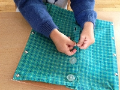
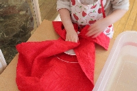
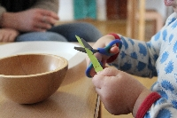

Materiel
Matériel de vie pratique
Dans l’ambiance, l’enfant pourra exercer des activités liées à sa vie quotidienne, adaptées à son environnement. Il effectuera ainsi dès son arrivée dans la communauté enfantine des activités simples, qui seront pour lui de véritables activités créatrices.
Quand l’enfant entreprend un exercice de vie pratique, il s’engage entièrement dans l’activité, aussi bien physiquement par la manipulation, que psychiquement de par l’attention et la précision qu’elle nécessite.
Ces exercices ont une fonction d’adaptation et d’orientation : ils vont non seulement permettre à l’enfant de s’approprier les gestes et actions propres à son environnement et à sa culture, mais aussi lui permettre de trouver sa propre place dans la société à laquelle il appartient.
C’est pourquoi les exercices de vie pratiques diffèrent selon les crèches, écoles, régions, pays …
Ce matériel permet la coordination des mouvements, le développement et l’acquisition de l’indépendance, le développement de la concentration par la répétition de l’exercice, la construction de l’esprit logique.


